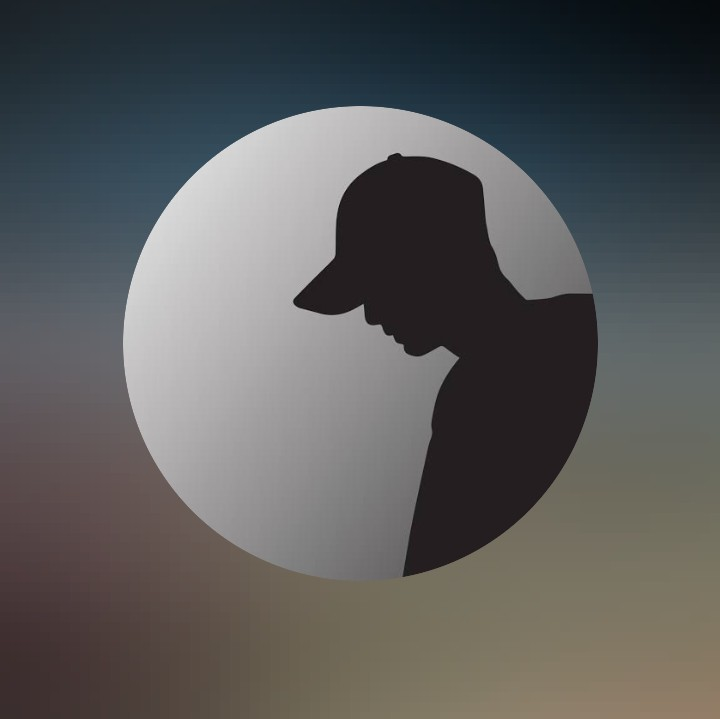

Criador de Conteúdo Multiplataforma & Idealizador do GG Xtreino.
Subindo capa e entregando o melhor do cenário de Free Fire.
Mais do que gameplay, fomentamos o cenário competitivo. Junte-se ao nosso servidor do Discord, participe de treinos de alto nível e conecte-se com a comunidade.
Entrar no Discord